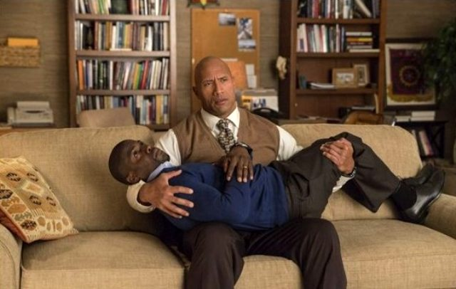
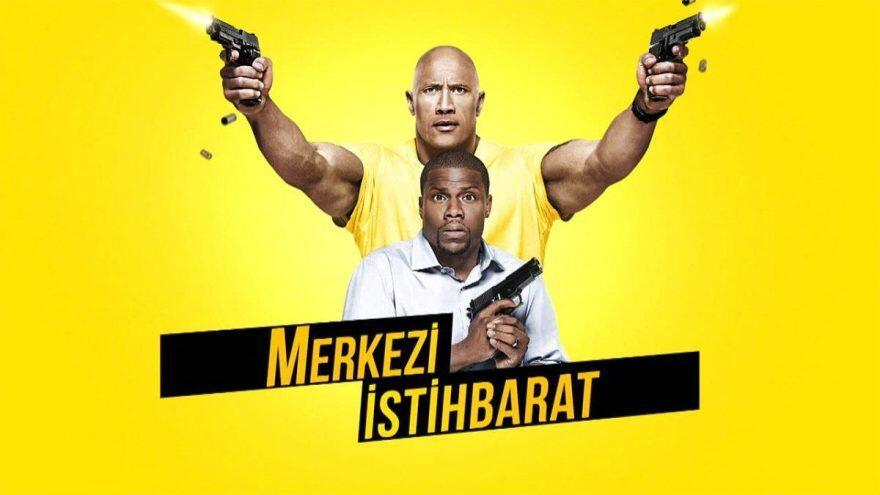
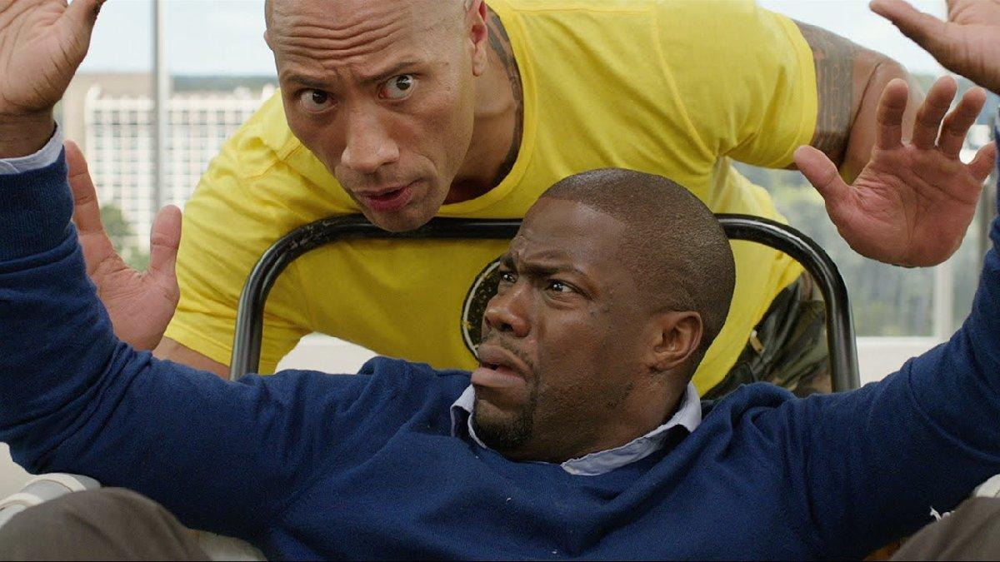

Filmin Konusu
Kevin Hart ve Dwayne "The Rock" Johnson'ı bir arada düşünmek elbette ki yüzde bir tebessüm oluşturacaktır. Komedinin sevilen 2 yüzü bir kahkaha fırtınası koparacakmış gibi bir izlenim oluşturuyor. Peki bunu gerçekten karşılayabiliyor mu?
Kötü Komşular 2 gibi çok başarılı komedi filmlerinin seyircilerle buluştuğu bu dönemde yaz ayları için beklentiler de büyük. Bol bol filmin vizyona girdiği haftalarda mutlaka bir yerli ya da yabancı komedi filmiyle karşılaşıyoruz. Komedi filmlerinin de ne yazık ki büyük bir kısmı çerezlik ve mesajsız oluyor. Ağırlıklı olarak erkek oyuncuların ön planlarda yer aldığı komedi filmlerindeki bu tekelleşme de biraz can sıkıcı olmaya başlıyor.
Merkezi İstihbarat Hollywood'un alıştığımız "buddy komedi"lerinden çok da farklı değil. Liseden beri görüşmeyen iki karakteri tekrar bir araya getiren yapımda rollerinin tamamen değişmiş olduğunu görüyoruz. Okulun havalı çocuğu Calvin sıkıcı bir muhasebeci olmuş, okulun şişman ve alay edilen çocuğu Bob ise fazla kilolarından kurtularak CIA ajanı olarak ortaya çıkıyor. Size kahkahalar attırmasa da yüzünüzde bir tebessüm oluşturan bir dostluk geliştiriyorlar. ABD Casus Uydu Programı’nın şifresi çalınınca dünyanın güvenliği ikilinin eline düşüyor.
Oldukça Komik ve Aksiyon Dolu
Hollywood'un tüketim filmlerine yönelik olduğunu biliyoruz. Genellikle derinlikli duygular içermeyen komedi yapımlarıyla seyircileri bir araya getiren, biraz da kalıpları dar bir camia. Merkezi İstihbarat da Hollywood klişelerinden payına düşeni almış. Johnson ve Hart'ın arasındaki ilişki insanı güldürüyor ancak filmin sürekli silahlı adamların kovalama sahnelerine dönüşmesi ve baş ikilinin oradan buradan atlayarak sürekli kaçış halinde olmaları bir müddet sonra insanı biraz bunaltabiliyor.
Bir Amerikan Komedisi
Ancak filmin hakkını yememek gerekli, senaryosu Amerikan komedileri arasında kendini sıyırmaya çalışan bir senaryo. Oyunculuklar da en az kadro kadar başarılı. Johnson alıştığımız sert adam tiplemesiyle karşımıza çıkıyor, bu beklenmeyen bir şey değil. Ancak Hart'ın performansı gerçekten çok başarılı. Çaresizlik ve öfke patlamaları durumunda bile insanı güldürmeye yetecek kadar güçlü bir enerjisi var. Film her ne kadar Johnson'ı komedi unsuru, Hart'ı ise standart karakter yapmaya çalışmışsa da söz konusu Hart olunca bu çok zor.
Son Olarak
Filmin görsel efektleri ve kostüm tercihleri de oldukça başarılı. Camdan aşağı atlama sahneleri ve silahlı kovalamacalar sırasında bu unsurlar seyirciyi yakalamayı başarıyor. Efektlerde abartıya kaçılmamış. Komedi unsurlarını oyuncuların yanı sıra vücut dilleri, kostüm seçimleri, seçilen mekanlar aracılığıyla da yansıtabilen bir film olmuş. Filmin en büyük sıkıntısı ikili arasındaki uyumdan yeterince faydalanamamış olması. Tıpkı elindeki malzemelerle ne yapacağını bilemeyen bir çocuk gibi davranmış yönetmen Rawson Marshall Thurber. Senaryo kadrosu da bir hayli kalabalık olan film, iki saate yaklaşan süresiyle bir zaman geçirme aracı olarak algılanmasın; belirtmek gerekir ki lise yıllarında geçen sahneler gerçekten eğlenceli. Johnson'ı alıştığımız sert adam imajından bir nebze de olsa uzaklaşmış sahnelerde görmek de keyif verici. Kısacası toparlarsak, Hangover ya da Kötü Komşular gibi kendi kategorisinin başı çeken yapımları arasında yer almasa da, zamanı olanlar ve komedi sevenler için izlemesi keyifli bir film. Sıkıcı değil, yorucu değil, ancak eğlenceli ağırlığı da beklediğiniz kadar değil.
